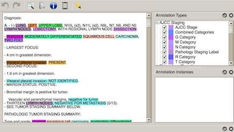

The task of manual annotations requires selecting a length of text (an extent) and then selecting a tag name that matches the semantic class of that text. For example, lung is annotated with the tag Organ; left is annotated with the tag Laterality; and Upper Lobe is annotated with the tags Relative Location. This process is repeated throughout the document until all relevant content is annotated.

Figure: Example annotation software
Later once the Language Model is derived and applied back to these texts any discrepancies between the LM and the actual annotations will be reviewed and the annotation changed if it is thought to be incorrect. If the annotation is correct then it points to a weakness in the LM not being able to detect that semantic class in that context. This is corrected by modifying the parameters in the LM or other pre-processing activities.